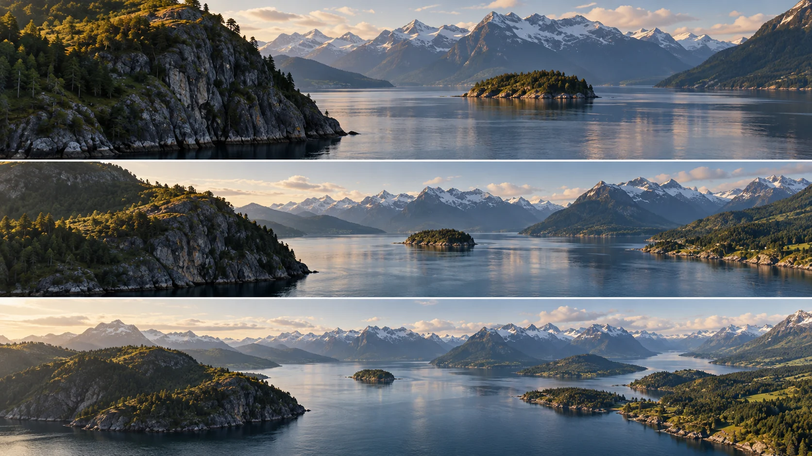

G09 · 중급 · 일반 드론
아이슬란드 피오르: 복합 이동으로 넓이 드러내기
전경과 원경의 상대 이동을 관찰하고 위치 변화와 카메라 회전이 맡는 역할을 나눈다.
그림에서 확인할 세 가지위치 변화와 회전을 구별한다.
1화면을 차지한 가까운 절벽
맨 위 왼쪽 절벽은 크게 보이고 가운데 섬과 먼 산이 뒤에 놓인다. 가까운 지형이 바다를 얼마나 가리고 있는지 시작 기준으로 읽는다.
2열리기 시작하는 물길
가운데는 절벽이 작아지고 오른쪽 바다가 넓어진다. 섬의 위치와 절벽의 겹침을 비교해 어떤 공간이 새로 드러나는지 살핀다.
3넓어진 만과 원경
맨 아래는 섬 주변의 물길과 오른쪽 해안이 넓게 읽힌다. 먼 산을 기준으로 가까운 지형의 변화가 더 크게 느껴지는지 비교한다.
촬영 설계
촬영을 이렇게 설계한다
공개할 폭을 정한다
피오르 시연에서 제작자는 대각선으로 후진하며 천천히 오른쪽으로 회전했다고 설명한다. 단지 수평선을 훑기보다 카메라의 위치를 바꾸며 넓은 공간을 보여주는 선택이다.
깊이의 기준을 둔다
본문은 전경 요소로 배경의 주제를 드러내면 시차가 생겨 흥미가 더해진다고 설명한다. 가까운 곶과 먼 산처럼 거리가 다른 요소를 비교해야 이동의 효과를 읽을 수 있다.
교육 적용 · 팬과 대조한다
같은 시작·끝 관심 대상을 두고 제자리 팬과 대각선 이동 안을 비교한다. 가까운 지형이 시야를 가리거나 이동량이 과하면 경로를 줄이고 필요한 공개만 남기는 대안을 검토한다.
아이슬란드 피오르의 넓이를 대각선 후진과 오른쪽 회전으로 드러내는 시연 부분이다.
원본 영상아이슬란드 피오르: 복합 이동으로 넓이 드러내기
1. 가림의 해소
전경 뒤 물길이 언제 보이는지 본다. 대각선 이동으로 새로 얻는 정보가 무엇인지 판단한다.
2. 상대 이동
가까운 지형과 먼 산의 변화량을 비교한다. 화면 회전과 깊이에 따른 상대 이동을 구별한다.
3. 회전의 양
주제가 화면 밖으로 밀려나는지 본다. 이동 중 관심 대상을 이어주는 데 필요한 회전량인지 판단한다.
재생이 제한되면 원본 영상 새 창을 이용하세요.
제작진 설명 · 한국어 요약 번역
피오르와 강: 이동을 겹쳐 깊이 만들기
피오르 촬영
VicVideoPic은 아이슬란드 피오르의 폭을 보여주려고 오른쪽 스틱으로 대각선 후진을 했다고 한다.
여기에 왼쪽 스틱으로 느린 우회전을 더해 카메라가 천천히 돌게 했다.
제자리 회전만 하는 카메라는 지루하다고 보고 여러 이동의 결합을 권한다.
강 촬영
강 장면은 전진하며 고도를 올리고 느리게 우회전해 강줄기를 따라간다.
전경 요소는 시차의 재미를, 기하학적 선은 시선 유도를 더한다고 설명한다.
설정
같은 글은 요 회전과 짐벌 속도를 낮추고 부드러움을 높이는 설정도 제시한다.
Kling 프롬프트단문 인과 체인 · 16:9
내가 직접 만들어 본다
드론의 위치 이동은 가까운 절벽의 가림을 풀고 카메라 회전은 방향을 맡는다는 역할 분리를 지시한다.
- S01피오르 바다 앞에 큰 절벽이 가까이 서 있다.
- S02절벽 뒤로 작은 섬과 먼 산이 놓여 있다.
- S03영상은 하나의 연속 쇼트다.
- S04처음 10초 동안 절벽이 화면 왼쪽을 크게 가린다.
- S05절벽이 가려서 섬과 바다는 일부만 보인다.
- S06다음 10초 동안 드론은 대각선으로 천천히 뒤로 물러난다.
- S07드론이 물러나기 때문에 가까운 절벽이 빠르게 작아진다.
- S08먼 산은 거의 움직이지 않고 제자리에 남는다.
- S09절벽이 작아지자 그 뒤에 숨은 물길이 열린다.
- S10마지막 10초 동안 카메라는 오른쪽으로 천천히 돈다.
- S11카메라가 돌면서 넓어진 만과 오른쪽 해안이 들어온다.
- S12그 결과 위치 이동은 가림을 풀고 회전은 방향을 맡는다.
[네거티브]
- 절벽이 멀리 작게 놓여 전경이 사라지는 것 금지
- 섬이 절벽 앞으로 나와 위치가 뒤바뀌는 것 금지
- 영상 중간에 컷이 들어가 장면이 끊기는 것 금지
- 절벽이 처음부터 작아 바다가 훤히 보이는 것 금지
- 섬과 바다가 처음부터 전부 드러나 있는 것 금지
- 드론이 앞으로 전진해 절벽에 다가가는 것 금지
- 절벽 크기가 그대로이고 바다만 움직이는 것 금지
- 먼 산도 절벽처럼 빠르게 흘러가 버리는 것 금지
- 섬이 절벽 뒤에 계속 겹쳐 물길이 막혀 있는 것 금지
- 카메라가 왼쪽으로 돌아 반대편을 비추는 것 금지
- 넓은 만 대신 같은 바다만 반복해 보이는 것 금지
- 회전만으로 가림이 풀린 것처럼 보이는 것 금지
결과에서 볼 것
- 가까운 절벽이 먼 산보다 훨씬 빠르게 작아졌는가
- 절벽이 작아지며 뒤의 물길이 열렸는가
- 마지막 회전이 가림이 아니라 방향만 바꾸었는가